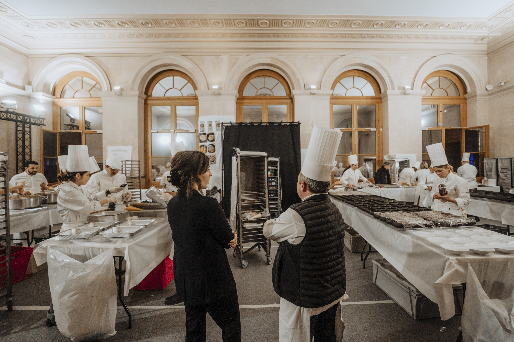

Les premiers gestes
Une première expérience en cuisine m’apprend le goût du travail précis et de l’attention aux autres.
Table libre depuis 2018
Une cuisine de saison, précise et généreuse, pensée comme un lieu où l’on a envie de rester.
01 / L’intention
Chez Sillage, chaque assiette commence par un produit et finit par un souvenir. Nous travaillons des associations franches, des cuissons justes et les petits gestes qui changent tout.
02 / Le rythme
Notre carte se déplace avec les saisons. Un matin, les maraîchers livrent leurs trouvailles ; le soir, elles deviennent un menu qui n’existera peut-être plus demain.
03 / La rencontre
Déjeuner rapide ou dîner qui s’étire, on vient ici pour manger, bien sûr, mais aussi pour être accueilli. La cuisine est ouverte, la conversation aussi.

À propos de moi
Une première expérience en cuisine m’apprend le goût du travail précis et de l’attention aux autres.
Je découvre d’autres tables, d’autres rythmes et des producteurs qui changent ma façon de penser l’assiette.
Je rassemble ces expériences dans une cuisine personnelle, ouverte et en mouvement, à partager chaque jour.
Venir nous voir